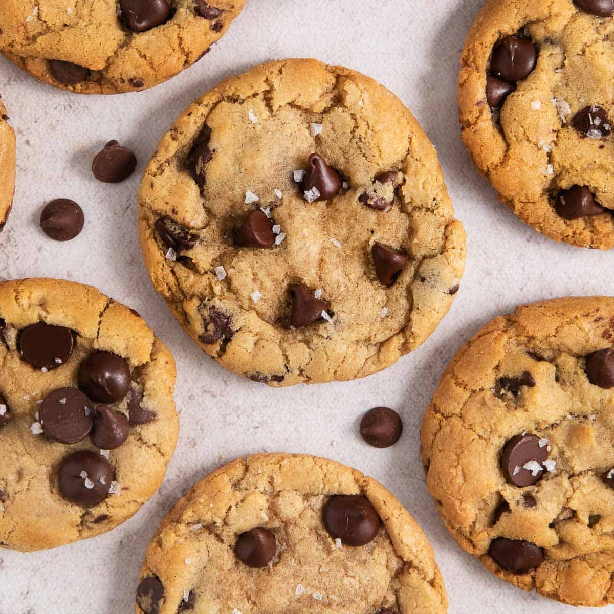

Classic Chocolate Chip Cookies

A simple and delicious cookie recipe that's perfect for any occasion.
These classic chocolate chip cookies are soft, chewy, and full of chocolate flavor.
Ingredients
- 1 cup unsalted butter, softened
- 1 cup granulated sugar
- 1 cup packed light brown sugar
- 2 large eggs
- 2 teaspoons vanilla extract
- 2 1/4 cups all-purpose flour
- 1 teaspoon baking soda
- 1/2 teaspoon salt
- 1 cup semisweet chocolate chips
Steps
- Preheat oven to 375 degrees F (190 degrees C). Line baking sheets with parchment paper.
- In a large bowl, cream together butter, granulated sugar, and brown sugar until light and fluffy.
- Beat in eggs one at a time, then stir in vanilla.
- Combine flour, baking soda, and salt. Gradually add to the wet ingredients and mix until just combined.
- Stir in chocolate chips.
- Drop by rounded tablespoons onto prepared baking sheets.
- Bake for 10-12 minutes, or until golden brown.
- Let cool on baking sheets for a few minutes before transferring to wire racks to cool completely.